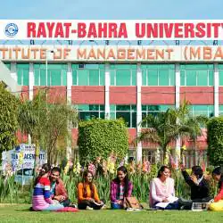
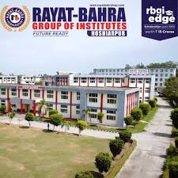

Our Global Campus
Lorem uishhasdhaoh caiodahodhoadnasojhboa dhoiadh

Kharar

Shimla

Rayat Bahra University is a private university located in Mohali, Punjab, India.
Established in 2014, it operates under The Rayat-Bahra University Act, 2014 and is part of the Rayat
Bahra Group. The university offers a wide range of programs across disciplines such as engineering,
pharmaceutical sciences, management, law, agriculture, nursing, and more.
Lorem uishhasdhaoh caiodahodhoadnasojhboa dhoiadh
- Diploma in Organic Farming
- Diploma in Floriculture and Landscaping
- Diploma in Culinary Arts
- Diploma in Air Cargo Management
- Diploma in Airlines Cabin Crew & Hospitality
- Tour Guiding with License
- Airport & Cargo Operation
- Food & Beverage Production
- Communication Skills
- B.Tech (Engineering & Computing)
- BBA (Business Administration)
- BCA (Computer Applications)
- B.Sc (Agriculture, Nursing, Allied Health Sciences)
- LLB (Law)
- B.Pharm (Pharmaceutical Sciences)
- BHMCT (Hotel Management & Catering Technology)
- B.Des (Animation, Art & Design)
- M.Tech (Engineering & Computing)
- MBA (Business Administration)
- MCA (Computer Applications)
- M.Sc (Various Specializations)
- LLM (Law)
- M.Pharm (Pharmaceutical Sciences)
- PG Diplomas (Hospital Administration, Foreign Trade, Intellectual Property Rights, Human Rights
Law, and more)
Lorem uishhasdhaoh caiodahodhoadnasojhboa dhoiadh


Rayat Bahra University offers a range of facilities to support students academically and personally.
Here are some of the key amenities available:.

The library at Rayat Bahra University is a hub of knowledge, offering an extensive collection of books, journals, and digital resources. Open 24x7, it provides students with a quiet and comfortable space for research and self-study, fostering academic excellence.

The university gym is equipped with modern fitness machines and facilities, allowing students to
maintain their physical well-being.
It serves as a great place to relieve stress, improve health, and stay active, supporting a balanced
lifestyle alongside academic responsibilities.academic schedules.

The cafeteria offers a variety of delicious and affordable food options in a clean and welcoming environment. It provides students with nutritious meals, making it a perfect spot to relax, socialize, and refuel during busy academic schedules.
UYYYVU UFU UYUUF UTFY UUYG U U

i appreciate the green environment, modern facilities, and well-maintained infrastructure

he university has tie-ups with multiple companies, and students have secured placements with firms like Infosys, Wipro, and Tech Mahindra.